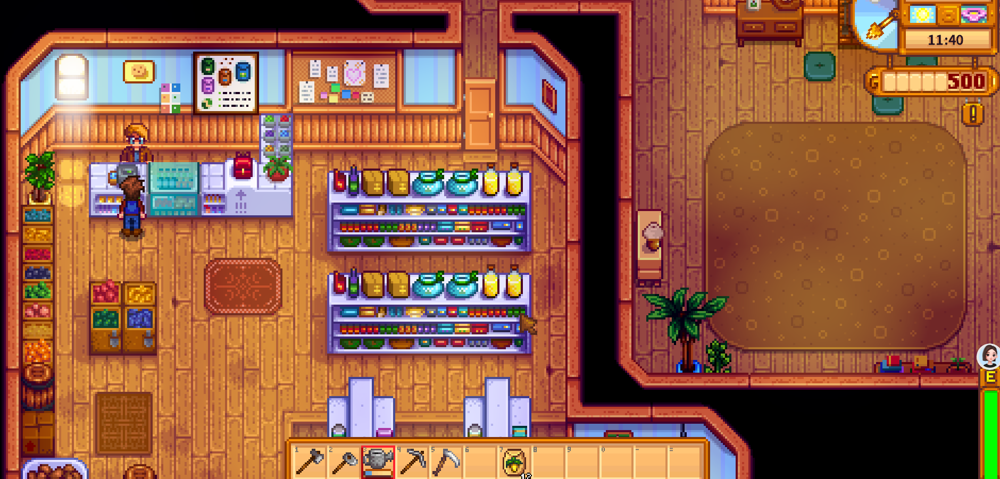
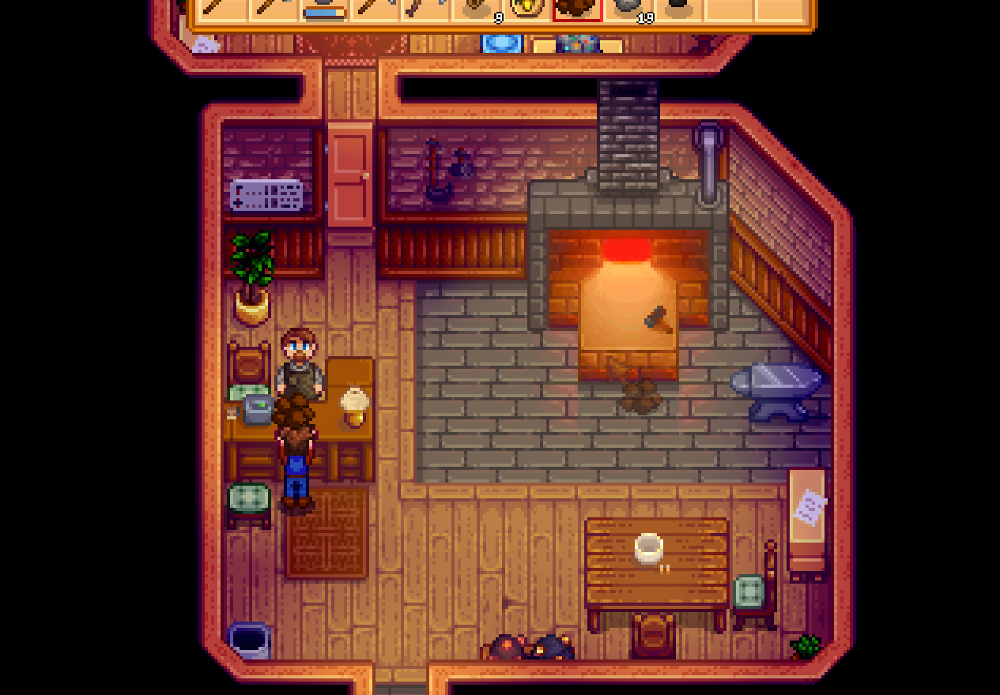

Quick answers (read this first)
- Money comes from a small crop loop you actually water, plus forage and optional rainy fishing—not from clearing the whole farm on day 1.
- Sell extras; keep a few crops/forage for Community Center candidates.
- First “big” buys: seeds to refill the patch and usually the backpack before cosmetics.
- Do not dump gold into Vault bundles or Traveling Cart FOMO while you still need Summer seed money.
- If mornings feel impossible, shrink the farm—not your sleep schedule.
Who this is for (and who should skip)
Use this if you just started, feel broke every afternoon, and want a simple Year 1 cash rhythm.
Skip or skim if you already run ancient-fruit greenhouse spreadsheets. This page is for solvent beginners, not max gold/day charts.
Version note: Written for Stardew Valley 1.6-era QoL. Confirm shop prices in-game—we do not invent profit-per-day charts.
From our Year 1 save (real pitfalls): We sold almost every edible forage for quick gold, then hit Exhausted with nothing to eat. Keep two snacks. Gold from a shipping bin can wait one night; fainting costs more dignity than 50g of leeks.
Pros & cons of a calm money plan
| Details | |
|---|---|
| Pros | Less restart urge; steady seed money; upgrades match real pain points; works in short play sessions. |
| Cons | Slower than aggressive fishing/mining min-max; your farm will look “small” compared to showcase videos. |
| Use when | First playthrough, or you keep going broke after impulse buys. |
| Skip when | You already know your preferred money route and only need exact crop tables. |
Interactive checklist
Tick as you play. Saved in this browser only.
Safe to skip (anti-FOMO spending)
- Buying furniture and decorations in week one.
- Paying Vault gold bundles while your patch still needs seeds.
- Clearing every rock/tree before you have a watered crop loop.
- Buying every tool upgrade the day it appears.
Decision table: where the next gold goes
| If you feel… | Spend on… | Wait on… |
|---|---|---|
| Inventory full before noon | Backpack upgrade | Cosmetic farm stuff |
| Mornings are only watering pain | Watering can upgrade (when the patch is real) | Expanding to a huge field |
| Patch is empty / season changing | Seeds for the next season | Vault bundles |
| You are close to minecarts / greenhouse progress | Only the missing bundle pieces you already hunt | Random cart curiosities |
Real screenshots
From our Year 1 save. Farm Day-1 shots also on the Spring guide.

Game screenshot © ConcernedApe — used for guide commentary

Game screenshot © ConcernedApe — used for guide commentary

Game screenshot © ConcernedApe — used for guide commentary
How to run a money day (operations)
- Water the patch first. Dead crops are free losses.
- Grab forage on the walk to town; keep bundle candidates, sell obvious junk later via the bin.
- At Pierre’s, buy only what refills your real patch size.
- Leftover energy: rainy fishing or a short mine trip—not both until you know your bar.
- Before bed, ship extras. Gold arrives overnight—do not panic-sell unique items at 1am without checking bundles.
Common mistakes
- Giant field, empty energy. You “invest” in clearing, then cannot water what you planted.
- Selling every quality crop instantly. Keep a few for Pantry slots before autopilot selling.
- Cart FOMO. One mystery purchase can erase days of seed budget.
- Upgrades with no loop. A better pickaxe does not fix an unwatered farm.
- Forgetting the next season. Ending Spring at 0g means empty Summer dirt.
Alternative variations
- Fishing-leaning: Tiny patch + rainy fishing focus. Trade: slower farm looks, steadier skill/cash on wet days.
- Mining-leaning: Same tiny patch; leftover energy into early floors for ore and geodes. Trade: more food management.
- Short-session: Water → ship → sleep. Expand only when mornings feel easy.
FAQ
Is fishing required for early money?
No. It is optional comfort income—especially on rainy days—after chores.
Should I buy animals immediately?
Not on day 1–2. Get a watered crop habit first; animals add morning chores.
Backpack or seeds first?
If you cannot pick things up, backpack. If the patch is empty, seeds. Whichever pain hits you today.
How does this connect to other guides?
Spring teaches the loop; Community Center teaches what not to sell blindly; this page teaches where gold should go.
Next steps / related pages
Unofficial fan guide. Not affiliated with ConcernedApe.